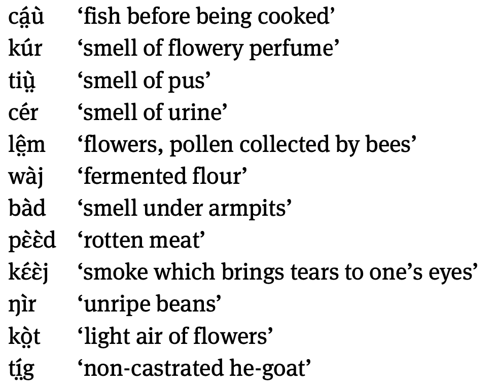

Week 10 語意與文化
語言裡的思維
語言如鏡 （through the language glass）
- 語言的不準處，恰好反映了人們以自我爲中心所形成的文化偏差。
「對上帝說西班牙語，對女人說義大利語，對男人說法語，對我的馬說德語。」（神聖羅馬帝國查理五世）
原初邏輯
世界觀
不去描寫感知者的主題所獲得之印象，而去描寫客體在生活空間中的 形狀、輪廓、位置、運動、作用方式等等。


另一個例子
田野工作 (linguistic fieldwork) 與語言類型學 (linguistic typology)
要瞭解語言與思維，坐在安樂椅上是危險的。

Eliciting Evidentiality
Evidentiality expresses the nature of evidence for a given statement, i.e., whether the speaker knows it as a fact, whether they heard it from someone else (hearsay), whether they witness it etc.
舉個例子。英文的「言據性」Evidentiality 是用藉由一些動詞與副詞來表達:
- I am happy (direct evidence)
- Mary seems happy (inferential)
- Mary looks happy (visual evidence, inferential) (d) Mary is happy, reportedly (hearsay)
- I hear that Mary is happy (hearsay)
[思考]
如何設計情境才能得出像是 Tariana 的言據系統?
人類語言學 (anthropological linguistics)
(Dimmendaal 2022) 詞彙語意、認知與文化
數字系統 (numeral systems)、親屬關係 (kinship terminology)、動植物命名 (bionomenclature)
顏色 (colour)、身體詞 (body-part nomenclature)、嗅覺認知 (Olfactory cognition)
空間與方位 (spatial orientation)
取名 (Onomastics)
曆法 (calendars)、時間 (time)、天氣 (weather)
情緒與委婉
。。。
情緒
Amharic (衣索比亞官方語言）中，sadness and disappointment 由一樣的動詞 azzənə 來表達。
Dutch 把某些情緒嵌入詞彙結構
The sound of silence
沉默 停頓 暫停 等待 緘默 無言 無聲 靜默 靜止不語 ...
在言談交際上有何意義？
親屬關係

English follows the Eskimo kinship system, very inclusive in the term “cousin” (堂（表）兄弟，堂（表）姐妹).
Crow and Omaha terminologies are symmetrical and opposite, with Crow systems having a matrilineal emphasis and Omaha systems a patrilineal emphasis.
The Iroquois and Sudanese systems highlight the distinction between parallel cousins, the children of your mother’s sister and father’s brother, and cross cousins.
這個模型較簡化，未考慮到不同文化中的親屬關係還會考量到的因素，例如性別、年齡、輩分等等。
日本法律將親屬以關係密切程度分成不同等級

漢語親屬系統
被歸類於蘇丹型親屬系統（Sudanese kinship）的一種。在該系統中每個人依據其宗族、輩分、性別與年齡，而有不同的親屬稱謂。複習一下
怎麼設計成題目？
怎麼設計成（可愛的）題目？
從前有一個喜歡聚會的立陶宛家族。他們在某個家族成員 Algirdas 的生日宴會上再次聚會，其中有 3 人缺席，16 人到場。以下是到場者的姓與名，但兩者的順序被打亂了。
- 請寫出以下成員的姓氏：Algirdas, Elena, Jonas, Elžbeta
- 請寫出以下缺席者的姓氏：Rasa 的丈夫； Rimas 的妻子； Elena 和 Aidas 的女兒
顏色與形狀

嗅覺
[練習] 如何翻譯成(好的)中文？

詞彙與名字

猜一猜這兩張圖在比什麼

方位
Cardinal Direction (基本方位)：用「東西南北」來稱呼。方位是固定的，不因自身位置改變而不一樣。（如【辜古依密舍 (Guugu Yimithirr)】語，是澳洲北部的一個原住民部落語言）
Egocentric System(自我中心系統)：在中文、英文與其他大多數語言中，使用「前後左右」表示方位。會因自己位置移動而稱呼不同。
[練習] 台大水果題、方位題
複合詞語意
Compounding (in morphology) involves the combination of lexical elements. The elements can be characterized as words, stems, or lexemes, depending on the language and on the theoretical framework adopted.
爭議很多，但是一個有趣的語言與文化窗口
如何分類？
- 某種參考
- endocentric (有 head) and exocentric (沒有 head)
漢語二字詞
以【心】爲例。
練習：【海鮮大雜燴】
本週任務
補充詞表